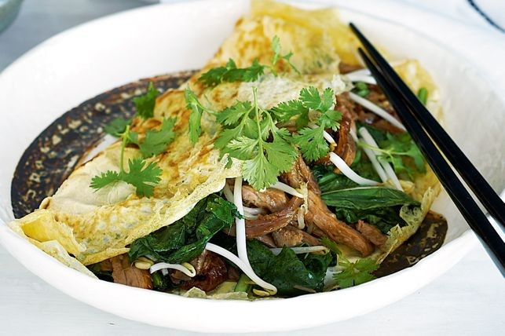
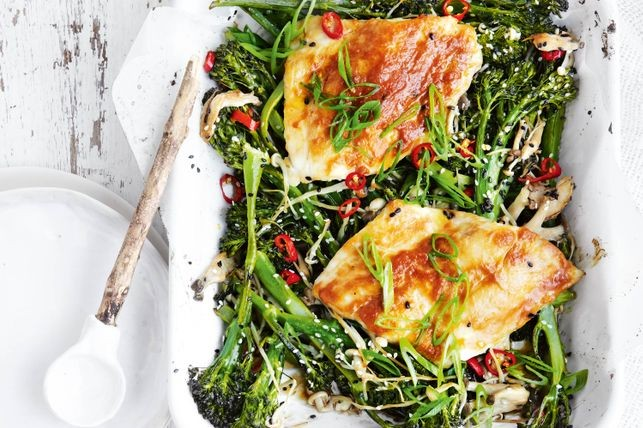
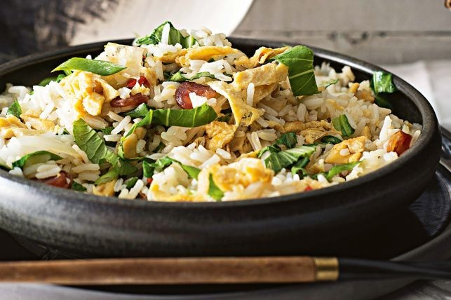

Welcome to ChefMaster recipes. This is a place where you can get all your recipes, well documented to you satisfaction. This will enable you to be able to develop a good sense of cuisine when preparing the food. This page is built with pure HTML and CSS. It was made by a student in the University of Newcastle
Recipes
Here are some recipes
- Asian duck and choy sum omelette
- Miso butter snapper with broccolini
- Classic fried rice
Asian flavours come together in this quick and easy omelette with Chinese barbecue duck.
Forget the line up of pots and pans and try this simple one-dish roasted miso butter snapper with broccolini.
Create classic fried rice at home with flavoursome Chinese sausage.
